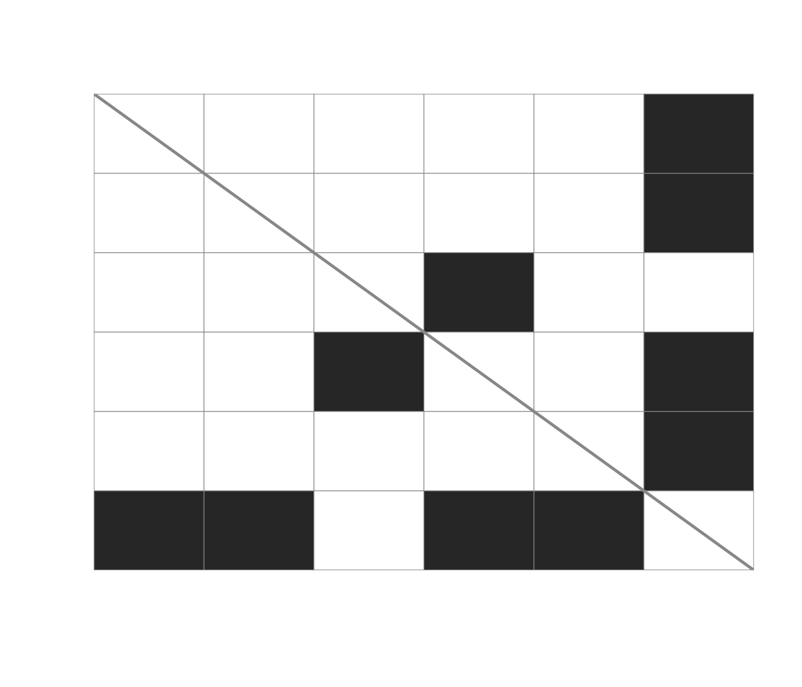
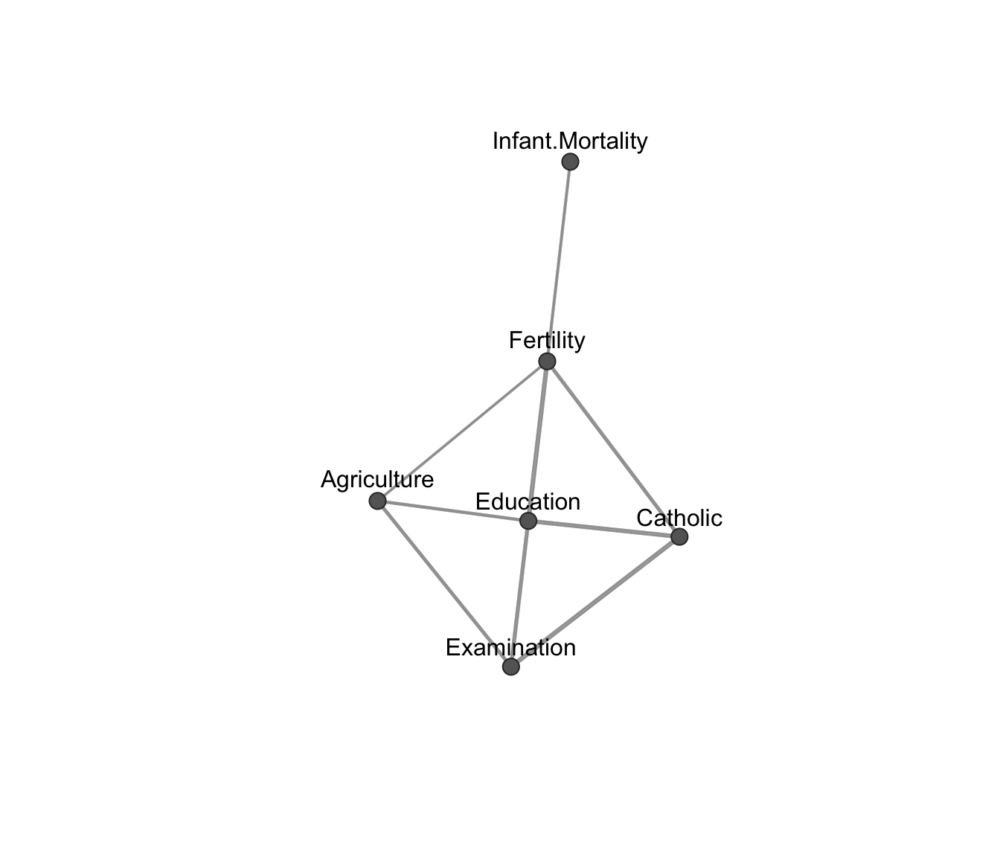
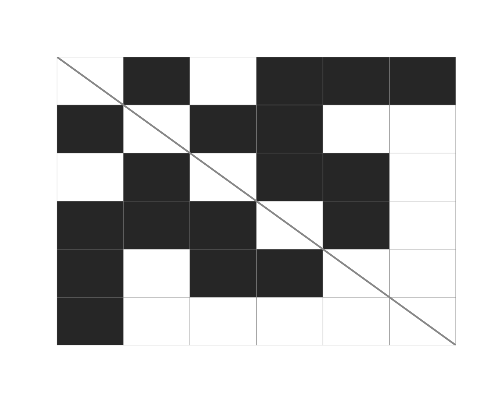

Plotting functionalities for Gaussian covariance and concentration graph models and their mixture
plot.RdPlotting functionalities for objects of class fitGGM or mixGGM.
Usage
# S3 method for class 'mixGGM'
plot(x, what = c("graphs", "classification", "adjacency", "common"),
layout = c("circle", "random"),
col = mclust::mclust.options("classPlotColors"),
pch = mclust::mclust.options("classPlotSymbols"),
dimens = NULL, ...)
# S3 method for class 'fitGGM'
plot(x, what = c("graphs", "adjacency"),
layout = c("circle", "random"), ...)Arguments
- x
An object of class
fitGGMormixGGM.- what
The type of plot to be produced. If
what = "graph"(default), the graph(s) corresponding to the association structure(s) among the variables is displayed; ifwhat = "adjacency"and heat-map representing the binary entries of the adjacency matrix is produced; ifwhat = "classification"the function produces a scatterplot showing the clustering of the observations; ifwhat = "common"the graph intersection of the mixture components graphs is produced, which display the edges common across the clusters. See "Details".- layout
Layout of the graph, either circular (default) or random.
- col
A vector of colors to be used in plotting.
- pch
A vector of symbols to be used in plotting.
- dimens
A vector giving the integer dimensions of the desired variables for multivariate data in case of
what = "classification".- ...
Further arguments passed to or from other methods.
Details
These functions are used to visualize graph association structures and clustering results for single and mixtures of Gaussian covariance and concentration models.
In the case of what = "graph", the graph of a Gaussian covariance graph model is bi-directed, while the graph of a Gaussian concentration model is un-directed. Thickness of the edges is proportional to the estimated association parameters.
See "Examples" section for various cases.
Examples
# covariance graph
data(mtcars)
x <- mtcars[,c(1,3:7)]
R <- cor(x)
graph <- ( abs(R) < 0.5 )*1
diag(graph) <- 0
fit1 <- fitGGM(data = x, graph = graph)
plot(fit1)
 plot(fit1, what = "adjacency")
plot(fit1, what = "adjacency")

# concentration graph
data(swiss)
V <- ncol(swiss)
graph <- matrix( c(0,1,0,1,1,1,
1,0,1,1,0,0,
0,1,0,1,1,0,
1,1,1,0,1,0,
1,0,1,1,0,0,
1,0,0,0,0,0), V,V, byrow = TRUE )
fit2 <- fitGGM(swiss, graph = graph, model = "concentration")
plot(fit2)
 plot(fit2, layout = "random")
plot(fit2, layout = "random")

plot(fit2, what = "adjacency")

if (FALSE) { # \dontrun{
# mixture of Gaussian concentration graph models
data(banknote, package = "mclust")
mod3 <- mixGGM(banknote[,-1], model = "concentration", K = 2)
plot(mod3, what = "graph")
plot(mod3, what = "adjacency")
plot(mod3, what = "classification")
plot(mod3, what = "classification", dimens = c(1,4,5))
plot(mod3, what = "common")
# mixture of Gaussian covariance graph models
data(wine, package = "gclus")
mod4 <- mixGGM(wine[,-1], model = "covariance", K = 3)
clb <- c("#999999", "#E69F00", "#56B4E9") # colorblind friendly palette
plot(mod4, what = "graph", colors = clb)
plot(mod4, what = "adjacency", colors = clb)
plot(mod4, what = "classification", colors = clb, dimens = c(1,7,8,12))
plot(mod4, what = "common")
} # }